微信公众号[深容Pubmed文献检索] 1. 此处右键：选菜单【翻成中文（简体）】 2. 翻译后，此处右键：选菜单【打印...】成PDF格式
建议屏幕分辨率：1920X1080；如果屏幕太小，可以按Ctrl + 或 Ctrl -缩放网页。

Software Construction
Chapter 3: Abstract Data Type (ADT) and
Object-Oriented Programming (OOP)
3.2 Designing Specification
Xu Hanchuan
xhc@hit.edu.cn
March 17, 2019

Outline
3.2 Designing Specification
1. Function / method in programming language
2. Specification: Programming for communication
⚫ Why specification is needed
⚫ Behavioral equivalence
⚫ Specification structure: pre-condition and post-condition
3. Designing specifications
⚫ Classifying specifications
⚫ Diagramming specifications
⚫ Quality of a specification
4. Summary

Objective of this lecture
3.2 Designing Specification
▪ Understand preconditions and postconditions in method
specifications, and be able to write correct specifications
▪ What preconditions and postconditions are, and what they mean
for the implementer and the client of a method.
▪ Understand underdetermined specs, and be able to identify and
assess nondeterminism(不确定性)
▪ Understand declarative vs. operational specs, and be able to write
declarative specs
▪ Be able to compare spec strength
▪ Be able to write coherent, useful specifications of appropriate
strength

Software Construction
1 Functions & methods in
programming languages

Method
public static void threeLines() {
STATEMENTS;
}
3.2 Designing Specification
public static void main(String[] arguments){
System.out.println("Line 1");
threeLines();
System.out.println("Line 2");
}

Parameters
[…] NAME (TYPE NAME, TYPE NAME) {
STATEMENTS
}
3.2 Designing Specification
To call:
NAME(arg1, arg2);
▪ Attention: parameter type mismatch when calling a method – static
checking

Return Values
public static TYPE NAME() {
STATEMENTS;
return EXPRESSION;
}
▪ void means “no type”
3.2 Designing Specification

Variable Scope
3.2 Designing Specification
class SquareChange {
public static void printSquare(int x){
System.out.println("printSquare x = " + x);
x = x * x;
System.out.println("printSquare x = " + x);
}
public static void main(String[] arguments){
int x = 5;
System.out.println("main x = " + x);
printSquare(x);
System.out.println("main x = " + x);
}
}
Methods: Building Blocks
3.2 Designing Specification
▪ Big programs are built out of small methods
▪ Methods can be individually developed, tested and reused
▪ User of method does not need to know how it works --- this is
called “abstraction” 方法的用户不需要知道方法是如何工作的—称
之为抽象

A complete method
3.2 Designing Specification
public class Hailstone { //
/**
* Compute a hailstone sequence.
* @param n Starting number for sequence. Assumes n > 0.
* @return hailstone sequence starting with n and ending with 1.
*/
public static List<Integer> hailstoneSequence(int n) {
List<Integer> list = new ArrayList<Integer>();
while (n != 1) {
list.add(n);
if (n % 2 == 0) {
n = n / 2;
} else {
n = 3 * n + 1;
}
}
list.add(n);
return list;
}
}

Software Construction
2 Specification: Programming for
communication

Software Construction
(1) Documenting in programming
3.2 Designing Specification
Java API documentation: an example
3.2 Designing Specification
Java API documentation: an example

3.2 Designing Specification
Java API documentation: an example
▪ Class hierarchy and a list of implemented interfaces.
▪ Direct subclasses, and for an interface, implementing classes.
▪ A description of the class
▪ Constructor summary
▪ Method summary lists all the methods we can call
▪ Detailed descriptions of each method and constructor
– The method signature: we see the return type, the method name, and the
parameters. We also see exceptions. For now, those usually mean errors the
method can run into.
– The full description.
– Parameters: descriptions of the method arguments.
– And a description of what the method returns.

Documenting Assumptions
3.2 Designing Specification
▪ Writing the type of a variable down documents an assumption
about it: e.g., this variable will always refer to an integer. 定义变量
时声明其类型是一种文档约定(编译器会进行检查以确保正确性)
– Java actually checks this assumption at compile time, and guarantees that
there’s no place in your program where you violated this assumption.
▪ Declaring a variable final is also a form of documentation, a claim
that the variable will never change after its initial assignment. 声
明变量是final类型的也是一种文档约定
– Java checks that too, statically.
▪ How about the assumptions of functions / methods?

Programming for communication
3.2 Designing Specification
▪ Why do we need to write down our assumptions?
– Because programming is full of them, and if we don’t write them down,
we won’t remember them, and other people who need to read or change
our programs later won’t know them. They’ll have to guess.如果没有，阅
读和修改时不清楚设定的内容
▪ Programs have to be written with two goals in mind:
– Communicating with the computer. First persuading the compiler that
your program is sensible – syntactically correct and type-correct. Then
getting the logic right so that it gives the right results at runtime. 语法正确
和类型正确
– Communicating with other people. Making the program easy to
understand, so that when somebody has to fix it, improve it, or adapt it in
the future, they can do so. 使程序易于理解


Hacking vs. Engineering
3.2 Designing Specification
▪ Hacking is often marked by unbridled(肆无忌惮的) optimism(乐观
主义者):
– Bad: writing lots of code before testing any of it
– Bad: keeping all the details in your head, assuming you’ll remember them
forever, instead of writing them down in your code
– Bad: assuming that bugs will be nonexistent or else easy to find and fix
▪ But software engineering is not hacking. Engineers are pessimists(
悲观主义者):
– Good: write a little bit at a time, testing as you go (test-first programming
in Chapter 7).
– Good: document the assumptions that your code depends on
– Good: defend your code against stupidity – especially your own! Static
checking helps with that.

Software Construction
(2) Specification and Contract
(of a method)
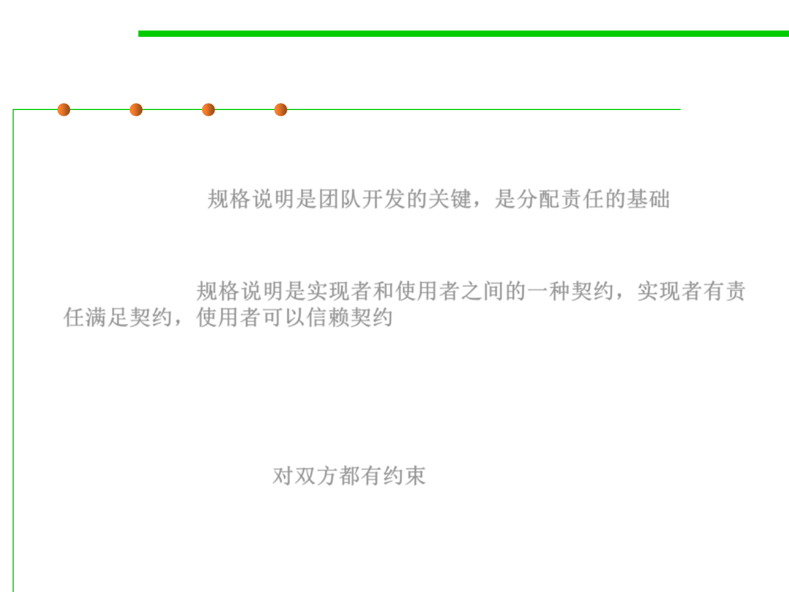
Specifications (or called Contract)
3.2 Designing Specification
▪ Specifications are the linchpin(关键) of teamwork. It’s impossible to
delegate(分派) responsibility for implementing a method without a
specification. 规格说明是团队开发的关键，是分配责任的基础
▪ The specification acts as a contract: the implementer is responsible
for meeting the contract, and a client that uses the method can rely on
the contract. 规格说明是实现者和使用者之间的一种契约，实现者有责
任满足契约，使用者可以信赖契约
– States method’s and caller’s responsibilities
– Defines what it means for implementation to be correct
▪ Like real legal contracts, specifications place demands on both
parties: when the specification has a precondition, the client has
responsibilities too. 对双方都有约束
– If you pay me this amount on this schedule…
– I will build a … with the following detailed specification
– Some contracts have remedies for nonperformance(对不履行行为有补充说明)
Why specifications?
3.2 Designing Specification
▪ Reality:
– Many of the nastiest(令人讨厌/抓狂的) bugs in programs arise because of
misunderstandings about behavior at the interface between two pieces of
code. 对两部分代码接口处行为的错误理解
– Although every programmer has specifications in mind, not all
programmers write them down. 不是所有实现者把规格说明文档化
– As a result, different programmers on a team have different specifications
in mind. 规格说明没有文档化，出错时难以定位问题
– When the program fails, it’s hard to determine where the error is.
▪ Advantages:
– Precise specifications in the code let you apportion blame (to code
fragments, not people!), and can spare you the agony of puzzling over
where a fix should go.准确的规格说明利于确定错误的位置和责任
– Specifications are good for the client of a method because they spare the
task of reading code. 客户端不需要阅读代码，通过说明了解程序

An example of specification
3.2 Designing Specification
▪ A method add() of a Java class BigInteger
– The spec for BigInteger.add is straightforward for clients to understand, and if
we have questions about corner cases, the BigInteger class provides additional
human-readable documentation. We’d not have to read through the
BigInteger constructor, compareMagnitude, subtract, and trusted-
StripLeadingZeroInts just as a starting point.
Specification (contract)
3.2 Designing Specification
▪ Specifications are good for the implementer of a method because
they give the implementer freedom to change the implementation
without telling clients. 规格说明给了实现者实现的自由，在保证约定
下，可以自由修改实现
▪ Specifications can make code faster, too.
– We’ll see that using a weaker specification can rule out certain states in
which a method might be called. This restriction on the inputs might allow
the implementer to skip an expensive check that is no longer necessary
and use a more efficient implementation. 通过在说明中增加对输入的限
定，省略掉耗时的正确性检查工作，提升效率。（保证输入正确性
的责任由调用者承担）
Specification (contract)
3.2 Designing Specification
▪ The contract acts as a firewall between client
and implementer.
– It shields the client from the details of
the workings of the unit.
– It shields the implementer from the details of
the usage of the unit.
– This firewall results in decoupling(解耦) , allowing
the code of the unit and the code of a client to be
changed independently, so long as the changes
respect the specification.


Specification (contract)
▪ Agreement between an object and its user
– Method signature (type specifications)
– Functionality and correctness expectations
– Performance expectations
▪ What the method does, not how it does it
– Interface (API), not implementation
3.2 Designing Specification

Software Construction
(3) Behavioral equivalence

Behavioral equivalence 行为等价
3.2 Designing Specification
▪ To determine behavioral equivalence , the question is whether we
could substitute one implementation for the other. 确定行为的等价，
关键是一个规格说明实现是否可以替换另一个
▪ Not only do these methods have different code, they actually have
different behavior. But when val occurs at exactly one index of the
array, the two methods behave the same

Behavioral equivalence
3.2 Designing Specification
▪ The notion of equivalence is in the eye of the client. 等价的判定由调
用者视角确定
▪ In order to make it possible to substitute one implementation for
another, and to know when this is acceptable, we need a
specification that states exactly what the client depends on. 判定可替
代与否，需要对调用端依赖内容的准确描述
▪ Note: specification should never talk
about local variables of the method
or private fields of the method’s class.
Spec不应涉及实现的内部变量和私有域

Software Construction
(4) Specification structure:
pre-condition and post-condition

Specification Structure
3.2 Designing Specification
▪ A specification of a method consists of several clauses:
– Precondition , indicated by the keyword requires
– Postcondition , indicated by the keyword effects
– Exceptional behavior: what it does if precondition violated
▪ The precondition is an obligation(义务) on the client (i.e., the caller
of the method). It’s a condition over the state in which the method is
invoked.
▪ The postcondition is an obligation on the implementer of the
method. If the precondition holds for the invoking state, the method
is obliged to obey the postcondition, by returning appropriate
values, throwing specified exceptions, modifying or not modifying
objects, and so on.

Specification Structure
▪ The overall structure is a logical
implication(逻辑蕴含): if the precondition
holds when the method is called, then the
postcondition must hold when the method
completes. 规格说明蕴含了以下逻辑：如果
前置条件满足了，则后置条件必须满足
▪ If the precondition does not hold when the
method is called, the implementation
is not bound by the postcondition. It is free
to do anything, including not terminating,
throwing an exception, returning arbitrary
results, making arbitrary modifications,
etc. 反之，如果前置条件不满足，后置条件
则无需满足
3.2 Designing Specification

Specifications in Java
3.2 Designing Specification
▪ Java’s static type declarations are effectively part of the precondition
and postcondition of a method, a part that is automatically checked
and enforced by the compiler. 前置和后置条件中对类型的声明，将
由编译器进行检查，确保正确性
▪ The rest of the contract must be described in a comment preceding
the method, and generally depends on human beings to check it and
guarantee it. 其余部分通过注释的形式进行描述，由人来保证正确性
▪ Parameters are described by @param clauses and results are
described by @return and @throws clauses.
▪ Put the preconditions into @param where possible, and
postconditions into @return and @throws.
Specifications in Java
3.2 Designing Specification
Specifications in Java
3.2 Designing Specification
▪ The Java API documentation is produced from Javadoc comments in
the Java standard library source code. Documenting your
specifications in Javadoc allows IDE(E.g. Eclipse) to show you (and
clients of your code) useful information, and allows you to produce
HTML documentation in the same format as the Java API docs.

3.2 Designing Specification
Specifications for mutating methods
▪ Example 1: a mutating method
▪ Example 2: a mutating method
▪ Example 3: a method that does not mutate its argument


3.2 Designing Specification
Specifications for mutating methods
▪ If the effects do not explicitly say that an input can be mutated, then
we assume mutation of the input is implicitly disallowed. (如果没有
明确说明，则默认输入值是不可变的)
▪ Virtually all programmers would assume the same thing. Surprise
mutations lead to terrible bugs. 可变带来巨大的麻烦
▪ Convention: 惯用法
– Mutation is disallowed unless stated otherwise. 除非另有说明，保持不可变
– No mutation of the inputs 不对输入进行修改
▪ Mutable objects can make simple specification/contracts very
complex
▪ Mutable objects reduce changeability
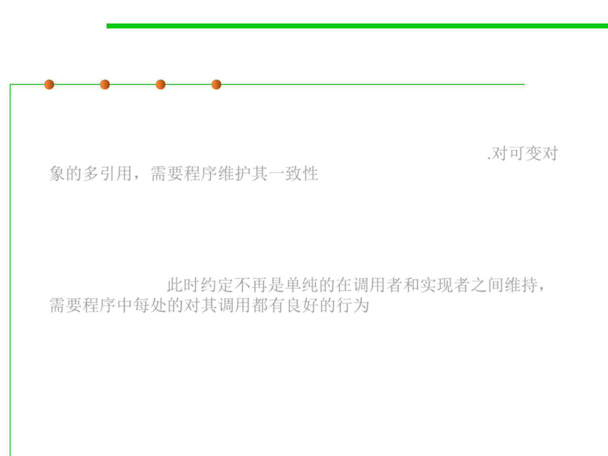
3.2 Designing Specification
Mutable objects make simple contracts complex
▪ Multiple references to the same mutable object (aliases for the object)
may mean that multiple places in your program — possibly widely
separated — are relying on that object to remain consistent.对可变对
象的多引用，需要程序维护其一致性
▪ To put it in terms of specifications, contracts can’t be enforced in just
one place anymore, e.g. between the client of a class and the
implementer of a class. Contracts involving mutable objects now
depend on the good behavior of everyone who has a reference to the
mutable object. 此时约定不再是单纯的在调用者和实现者之间维持，
需要程序中每处的对其调用都有良好的行为
– As a symptom of this non-local contract phenomenon, consider the Java
collections classes, which are normally documented with very clear
contracts on the client and implementer of a class.
– Try to find where it documents the crucial requirement on the client that
you can’t modify a collection while you’re iterating over it. Who takes
responsibility for it? Iterator ? List ? Collection ?

3.2 Designing Specification
Mutable objects make simple contracts complex
▪ The need to reason about global properties like this make it much
harder to understand, and be confident in the correctness of,
programs with mutable data structures. 可变使对象具有全局属性，
导致难于理解和确保正确性
▪ We still have to do it — for performance and convenience — but we
pay a big cost in bug safety for doing so. 可变的优点是性能和便利，
但是需要额外的确保无措的成本。
3.2 Designing Specification
Mutable objects reduce changeability
▪ Mutable objects make the contracts between clients and
implementers more complicated, and reduce the freedom of the
client and implementer to change.
– In other words, using objects that are allowed to change makes
the code harder to change. 可变的对象使代码难以变化
▪ An example: a method to looks up a username in database and
returns the user’s 9-digit identifier
▪ A client using this method to print out a user’s identifier:
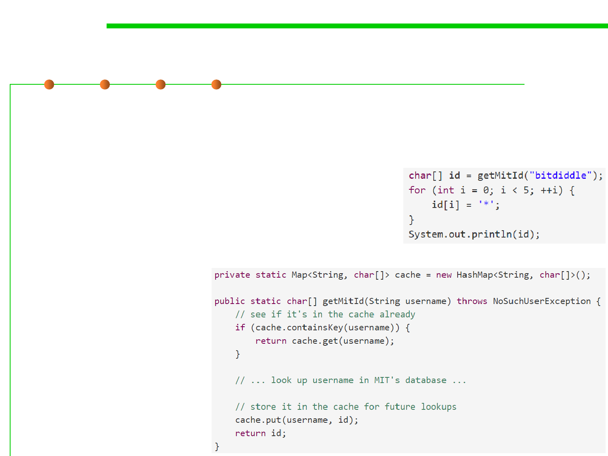 
3.2 Designing Specification
Mutable objects reduce changeability
▪ Now both the client and the implementer separately decide to
make a change. The client is worried about the user’s privacy, and
decides to obscure the first 5 digits of the id:
▪ The implementer is worried about the
speed and load on the database, so the
implementer introduces a cache that
remembers usernames that have been
looked up:
▪ What will happen?
3.2 Designing Specification
Mutable objects reduce changeability
▪ Sharing a mutable object complicates a contract.
▪ Who’s to blame here?
– Was the client obliged not to modify the object it got back?
– Was the implementer obliged not to hold on to the object that it returned?
▪ A possible way of clarifying the spec:
▪ How about this spec?
– It’s a lifetime contract! 终生约定
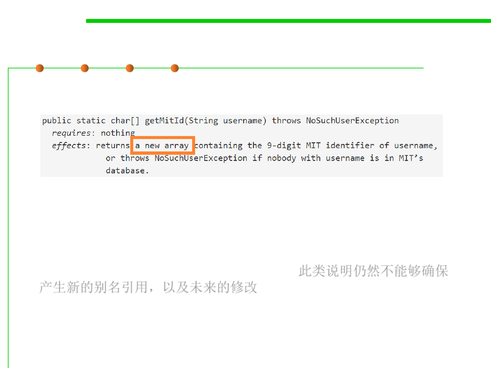
3.2 Designing Specification
Mutable objects reduce changeability
▪ How about this one?
▪ This spec at least says that the array has to be fresh.
▪ But does it keep the implementer from holding an alias to that new
array? Does it keep the implementer from changing that array or
reusing it in the future for something else? 此类说明仍然不能够确保
产生新的别名引用，以及未来的修改

3.2 Designing Specification
Mutable objects reduce changeability
▪ How about this one?
▪ The immutable String return value provides a guarantee that the
client and the implementer will never step on each other the way
they could with char arrays.
▪ It doesn’t depend on a programmer reading the spec comment
carefully. 不依赖于程序员对规格说明的认真对待程度
▪ String is immutable . Not only that, but this approach (unlike the
previous one) gives the implementer the freedom to introduce a
cache — a performance improvement. 也允许实现者增加实现自由
(E.g., cache)

Software Construction
(5) Testing and verifying
specifications
Formal contract specification
▪ Java Modelling Language (JML)
3.2 Designing Specification
▪ This is a theoretical approach with advantages
– Runtime checks generated automatically
– Basis for formal verification
– Automatic analysis tools
▪ Disadvantages
– Requires a lot of work
– Impractical in the large
– Some aspects of behavior not amenable to formal specification
Textual specification - Javadoc
3.2 Designing Specification
▪ Practical approach
▪ Documenting every parameter, return value, every exception
(checked and unchecked),what the method does, including Purpose,
side effects, any thread safety issues, any performance issues
▪ Do not document implementation details
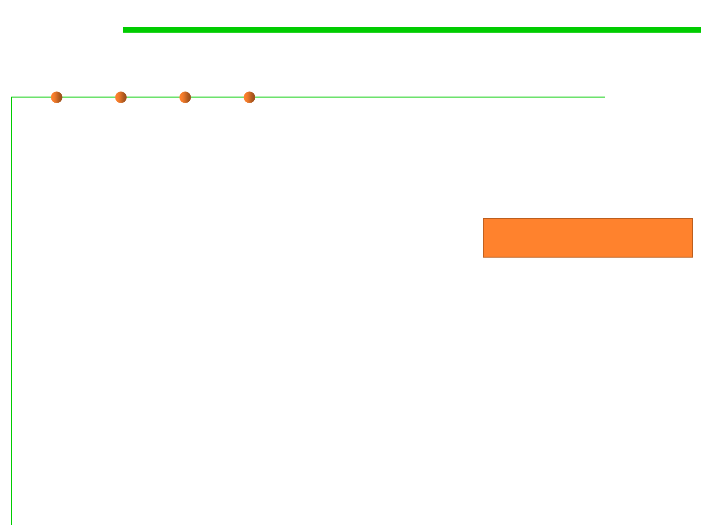
3.2 Designing Specification
Semantic correctness adherence to contracts
▪ Compiler ensures types are correct (type-checking)
– Prevents many runtime errors, such as “Method Not Found” and
“Cannot add boolean to int”
▪ Static analysis tools (e.g., FindBugs) recognize
many common problems (bug patterns)
Chapter 9 Refactoring
– Overriding equals without overriding hashCode
▪ But how do you ensure semantic correctness?

Formal verification
3.2 Designing Specification
▪ Use mathematical methods to prove correctness with respect to the
formal specification
▪ Formally prove that all possible executions of an implementation
fulfill the specification
▪ Manual effort; partial automation; not automatically decidable
"Testing shows the presence, not the absence of bugs.”
——Edsger W. Dijkstra, 1969
Testing
3.2 Designing Specification
▪ Executing the program with selected inputs in a controlled
environment
▪ Goals
– Reveal bugs, so they can be fixed (main goal)
– Assess quality
– Clarify the specification, documentation
Chapter 7 Robustness
Black-box testing
3.2 Designing Specification
▪ Black-box testing: to check if the tested program follow the specified
specification in an implementation-independent way.
▪ An example specification:
▪ The test case:


Software Construction
3 Designing specifications

Software Construction
(1) Classifying specifications
规格说明分类
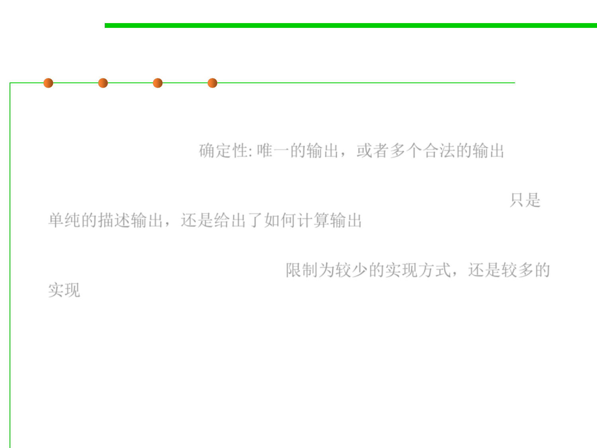
Comparing specifications
3.2 Designing Specification
▪ How deterministic it is. Does the spec defines only a single possible
output for a given input, or allow the implementer to choose from a
set of legal outputs? 确定性: 唯一的输出，或者多个合法的输出
▪ How declarative it is. Does the spec just characterize what the output
should be, or does it explicitly say how to compute the output? 只是
单纯的描述输出，还是给出了如何计算输出
▪ How ”strong” it is. Does the spec have a small set of legal
implementations, or a large set? 限制为较少的实现方式，还是较多的
实现
▪ “What makes some specifications better than others?”
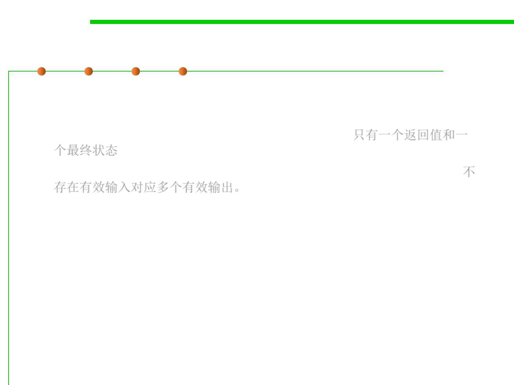
3.2 Designing Specification
Deterministic vs. underdetermined specs
▪ Deterministic : when presented with a state satisfying the
precondition, the outcome is completely determined.
– Only one return value and one final state is possible.只有一个返回值和一
个最终状态
– There are no valid inputs for which there is more than one valid output.不
存在有效输入对应多个有效输出。
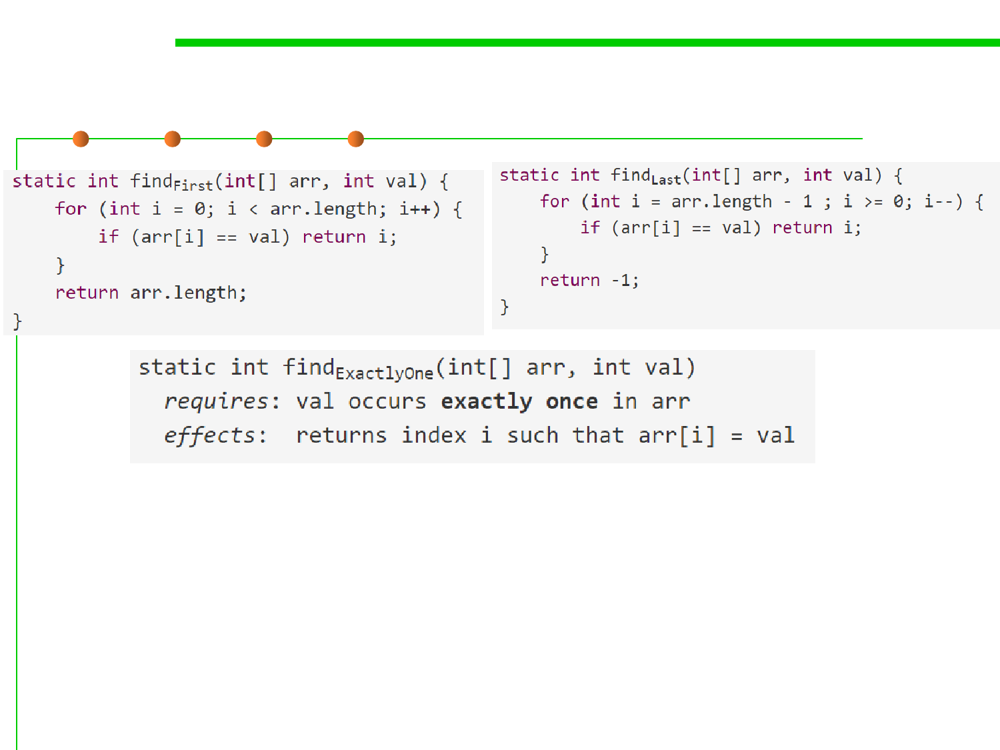
3.2 Designing Specification
Deterministic vs. underdetermined specs
▪ Both findFirst and findLast satisfy the specification, so if this is the
specification on which the clients relied, the two implementations
are equivalent and substitutable for one another.

3.2 Designing Specification
Deterministic vs. underdetermined specs
▪ Under-deterministic(低确定的): specification allows multiple valid
outputs for the same input.允许同一输入存在多个有效输出。
▪ Nondeterministic(非确定的): sometimes behaves one way and
sometimes another, even if called in the same program with the same
inputs (e.g., depending on random or timing) 输出结果不确定
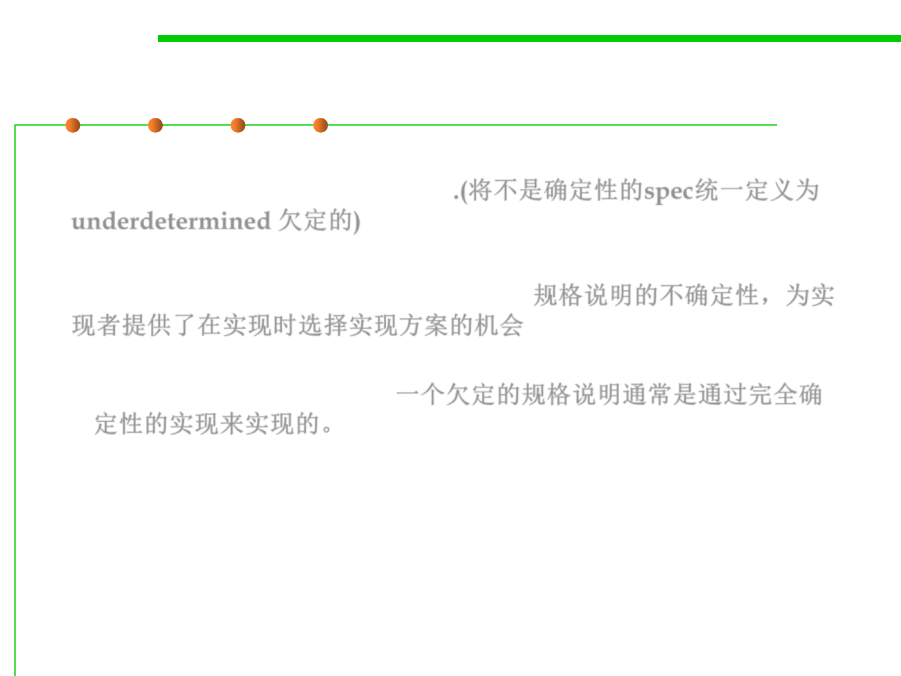
3.2 Designing Specification
Deterministic vs. underdetermined specs
▪ To avoid the confusion, we’ll refer to specifications that are not
deterministic as underdetermined.(将不是确定性的spec统一定义为
underdetermined 欠定的)
▪ Underdeterminism in specifications offers a choice that is made by
the implementer at implementation time. 规格说明的不确定性，为实
现者提供了在实现时选择实现方案的机会
– An underdetermined spec is typically implemented by a fully-
deterministic implementation.一个欠定的规格说明通常是通过完全确
定性的实现来实现的。

Declarative vs. operational specs
3.2 Designing Specification
▪ Operational specifications give a series of steps that the method
performs; pseudocode descriptions are operational.
▪ Declarative specifications don’t give details of intermediate steps.
Instead, they just give properties of the final outcome, and how it’s
related to the initial state.
▪ Declarative specifications are preferable.
– They’re usually shorter, easier to understand, and most importantly, they
don’t inadvertently expose implementation details that a client may rely
on. 简短，易于理解，不会暴露内部实现细节
▪ Why operational spec. exists?
– Programmers use the spec comment to explain the implementation for a
maintainer. 为维护人员提供解释
– Don’t do that. When it’s necessary, use comments within the body of the
method, not in the spec comment. 如果必需的话，放到内部的注释中，
而不是在spec中
Declarative spec.
3.2 Designing Specification
▪ Standard: the clearest, for clients and maintainers of the code.
Stronger vs. weaker specs
3.2 Designing Specification
▪ How to compare the behaviors of two specifications to decide
whether it’s safe to replace the old spec with the new spec? 如何比较
两个规格说明的行为，以决定是否可以进行替换？
▪ A specification S2 is stronger than or equal to a specification S1 if
– S2’s precondition is weaker than or equal to S1’s
– S2’s postcondition is stronger than or equal to S1’s, for the states that
satisfy S1’s precondition.
Then an implementation that satisfies S2 can be used to satisfy S1 as
well, and it’s safe to replace S1 with S2 in your program.
▪ Ideas:
– Weaken the precondition: placing fewer demands on a client will never
upset them. 要求的更少
– Strengthen the postcondition, which means making more promises. 承诺
的更多
Stronger vs. weaker specs
▪ Original spec:
▪ A stronger spec:
▪ A much stronger spec:
3.2 Designing Specification
Stronger vs. weaker specs
▪ How about these two?
3.2 Designing Specification

Stronger vs. weaker specs
3.2 Designing Specification
▪ If S3 is neither stronger nor weaker than S1, there specs. might
overlap (such that there exist implementations that satisfy only S1,
only S3, and both S1 and S3) or might be disjoint.
▪ In both cases, S1 and S3 are incomparable.

Software Construction
(2) Diagramming specifications
Diagramming specifications
3.2 Designing Specification
▪ Each point in this space represents a method implementation. 每个
点代表一个实现
▪ A specification defines a region in the space of all possible
implementations. 一个规格说明定义了一个区域，其中包含的点为其
实现
▪ A given implementation either behaves according to the spec,
satisfying the precondition-implies-postcondition contract (it is
inside the region), or it does not (outside the region). 一个实现或者满
足规格说明(区域内)，或者不满足(区域外)

Diagramming specifications
3.2 Designing Specification
▪ When S2 is stronger than S1, it defines a smaller region in this
diagram; a weaker specification defines a larger region.
– Strengthening the postcondition: For implementors, it means they have
less freedom, the requirements on their output are stronger. 加强后置条件
，意味着对输出要求更多，实现自由变少
– Weaken the precondition: Implementations will have to handle new
inputs that were previously excluded by the spec. 弱化前置条件，实现中
需要处理更多的情况
上述两点使可满足的实现变少(点变少)，故规格说明越强，区域越小

Software Construction
(3) Designing good specifications
Quality of a specification
3.2 Designing Specification
▪ What makes a good method? Designing a method means primarily
writing a specification. 设计一个方法的首要任务是编写规格说明
▪ About the form of the specification: it should obviously be succinct(
简洁的), clear, and well-structured, so that it’s easy to read.
▪ The content of the specification, however, is harder to prescribe(指定
). There are no infallible(一贯正确的) rules, but there are some useful
guidelines.(没有通用的准则，但存在一些有用的指导)
3.2 Designing Specification
The specification should be coherent(内聚的)
▪ The spec shouldn’t have lots of different cases. Long argument lists,
deeply nested if-statements, and boolean flags are all signs of
trouble.
3.2 Designing Specification
The specification should be coherent(内聚的)
▪ In addition to terrible use of global variables and printing instead of
returning , the specification is not coherent — it does two different
things, counting words and finding the longest word.
▪ How to improve:
– Separating those two responsibilities into two different methods will make
them simpler (easy to understand) and more useful in other contexts
(ready for change). 分到两个方法中，易于理解，同时易于改变
3.2 Designing Specification
The results of a call should be informative(提供信息的)
▪ If null is returned, you can’t tell whether the key was not bound
previously, or whether it was in fact bound to null.
▪ This is not a very good design, because the return value is useless
unless you know for sure that you didn’t insert null.

3.2 Designing Specification
The specification should be strong enough
▪ The spec should give clients a strong enough guarantee in the general
case — it needs to satisfy their basic requirements. We must use extra
care when specifying the special cases, to make sure they don’t
undermine what would otherwise be a useful method. 确保通常情况的
正确处理，同时也要对异常情况格外关注
▪ For example, there’s no point throwing an exception for a bad
argument but allowing arbitrary mutations, because a client won’t be
able to determine what mutations have actually been made. Here’s a
specification illustrating this flaw (and also written in an
inappropriately operational style): E.g.，对不合理参数进行抛出异常处
理后，不要允许随意的修改，否则会导致调用者不清楚实际发生了什么
▪ If a NullPointerException is thrown, the client is left to figure out on
their own which elements of list2 actually made it to list1 .
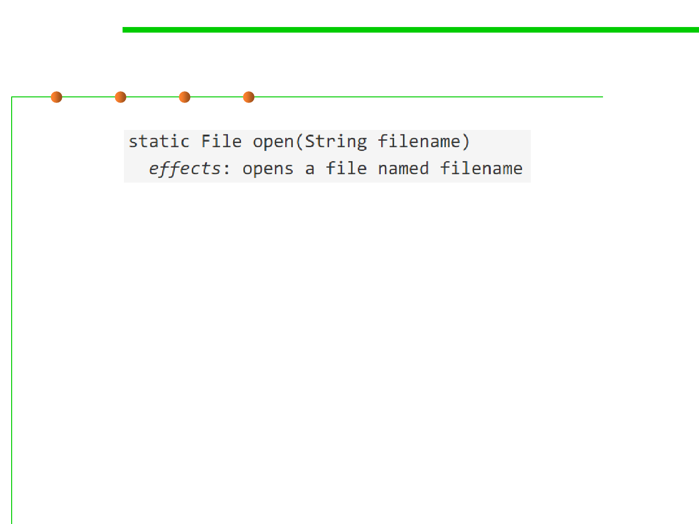 
3.2 Designing Specification
The specification should also be weak enough
▪ This is a bad specification.
– It lacks important details: is the file opened for reading or writing? Does
it already exist or is it created?
– It’s too strong, since there’s no way it can guarantee to open a file. The
process in which it runs may lack permission to open a file, or there might
be some problem with the file system beyond the control of the program.
▪ Instead, the specification should say something much weaker: it
attempts to open a file, and if it succeeds, the file has certain
properties.
3.2 Designing Specification
The specification should use abstract types
▪ Abstract notions like a List or Set
▪ Particular implementations like ArrayList or HashSet.
▪ Writing our specification with abstract types gives more freedom
to both the client and the implementer.
▪ In Java, this often means using an interface type, like Map or
Reader, instead of specific implementation types like HashMap or
FileReader.
▪ Since the behavior of the specification doesn’t depend on anything
specific about ArrayList, it would be better to write this spec in
terms of the more abstract List.

Precondition or postcondition?
3.2 Designing Specification
▪ Whether to use a precondition, and if so, whether the method code
should attempt to make sure the precondition has been met before
proceeding?
▪ For programmer:
– The most common use of preconditions is to demand a property precisely
because it would be hard or expensive for the method to check it. 检查条
件的正确性代价很高时，应该通过前置条件处理。
If to check a condition would
make a method unacceptably
slow, a precondition is often
necessary.

Precondition or postcondition?
3.2 Designing Specification
▪ For user: A non-trivial precondition inconveniences clients, because
they have to ensure that they don’t call the method in a bad state
(that violates the precondition); if they do, there is no predictable
way to recover from the error. So users of methods don’t like
preconditions.
– Thus, Java API classes tend to specify (as a postcondition) that they throw
unchecked exceptions when arguments are inappropriate. Java API类倾向
于采用后置条件的方式处理，当参数不合适时它们会抛出未检查异常。
– This makes it easier to find the bug or incorrect assumption in the caller
code that led to passing bad arguments. 找到由传递的错误参数引起的bug
更加容易
– In general, it’s better to fail fast , as close as possible to the site of the bug,
rather than let bad values propagate through a program far from their
original cause. 快速失败是好的决策，使失败点离bug尽可能的近，易于定
位
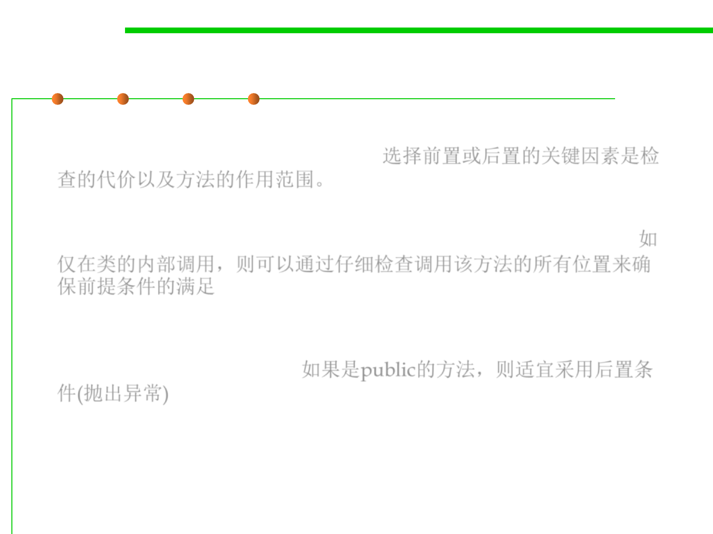
Precondition or postcondition?
3.2 Designing Specification
▪ The key factors are the cost of the check (in writing and executing
code), and the scope of the method. 选择前置或后置的关键因素是检
查的代价以及方法的作用范围。
▪ If it’s only called locally in a class, the precondition can be
discharged by carefully checking all the sites that call the method. 如
仅在类的内部调用，则可以通过仔细检查调用该方法的所有位置来确
保前提条件的满足
▪ If the method is public, and used by other developers, it would be
less wise to use a precondition. Instead, like the Java API classes, you
should throw an exception. 如果是public的方法，则适宜采用后置条
件(抛出异常)


Software Construction
Summary


Summary
3.2 Designing Specification
▪ A specification acts as a crucial firewall between the implementer of
a procedure and its client.
▪ It makes separate development possible: the client is free to write
code that uses the procedure without seeing its source code, and the
implementer is free to write the code that implements the procedure
without knowing how it will be used.

Summary
3.2 Designing Specification
▪ Safe from bugs
– A good specification clearly documents the mutual assumptions that a
client and implementer are relying on. Bugs often come from
disagreements at the interfaces, and the presence of a specification reduces
that.
– Using machine-checked language features in your spec, like static typing
and exceptions rather than just a human-readable comment, can reduce
bugs still more.
▪ Easy to understand
– A short, simple spec is easier to understand than the implementation itself,
and saves other people from having to read the code.
▪ Ready for change
– Specs establish contracts between different parts of your code, allowing
those parts to change independently as long as they continue to satisfy the
requirements of the contract.

Summary
3.2 Designing Specification
▪ Declarative specifications are the most useful in practice.
▪ Preconditions (which weaken the specification) make life harder for
the client, but applied judiciously they are a vital tool in the software
designer’s repertoire, allowing the implementer to make necessary
assumptions.

Summary
3.2 Designing Specification
▪ Safe from bugs.
– Without specifications, even the tiniest change to any part of our program
could be the tipped domino(多米诺骨牌) that knocks the whole thing over.
– Well-structured, coherent specifications minimize misunderstandings and
maximize our ability to write correct code with the help of static checking,
careful reasoning, testing, and code review.
▪ Easy to understand
– A well-written declarative specification means the client doesn’t have to
read or understand the code.
▪ Ready for change
– An appropriately weak specification gives freedom to the implementer,
and an appropriately strong specification gives freedom to the client.
– We can even change the specs themselves, without having to revisit every
place they’re used, as long as we’re only strengthening them: weakening
preconditions and strengthening postconditions.

Software Construction
The end
March 17, 2019